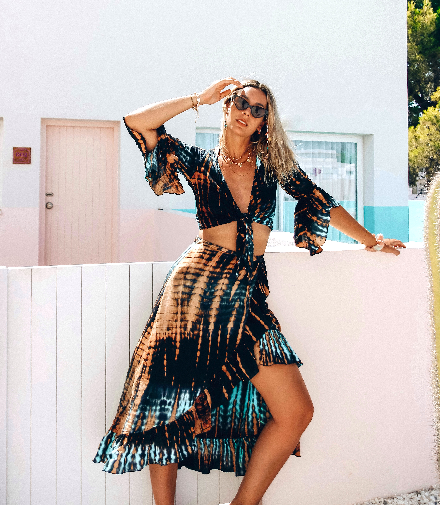
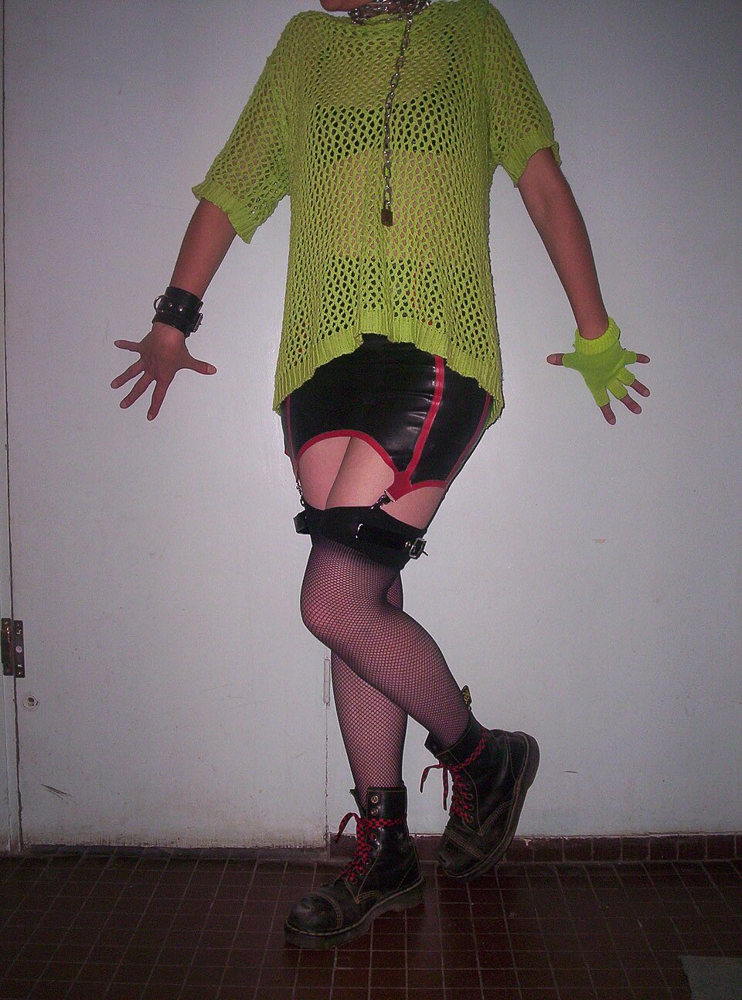
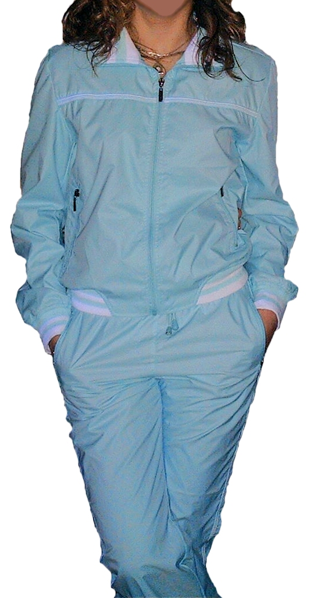
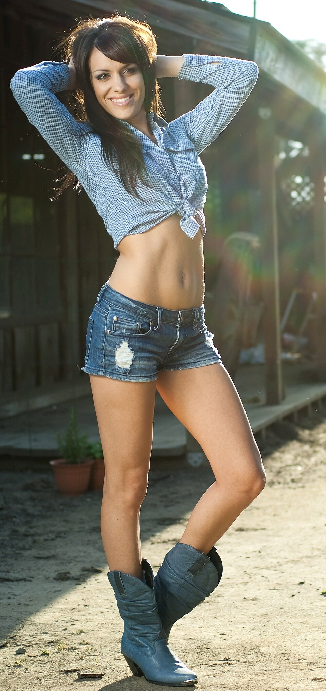
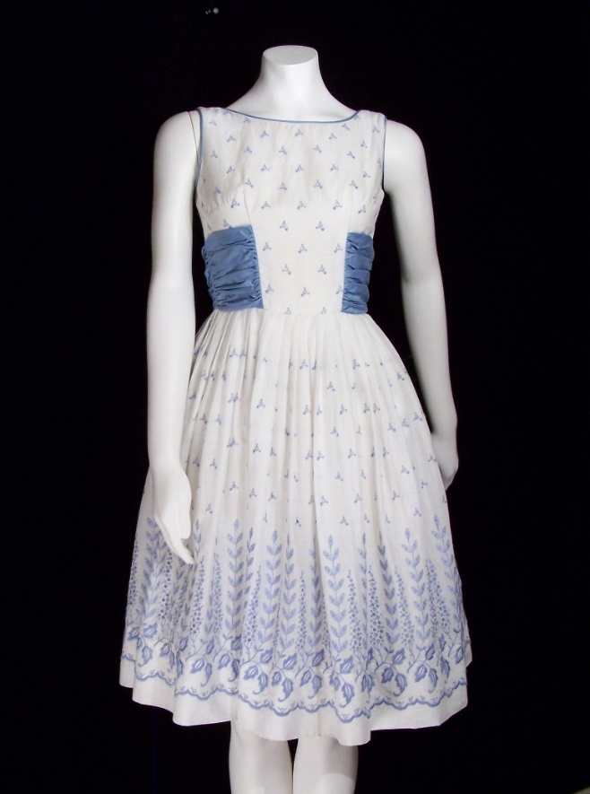
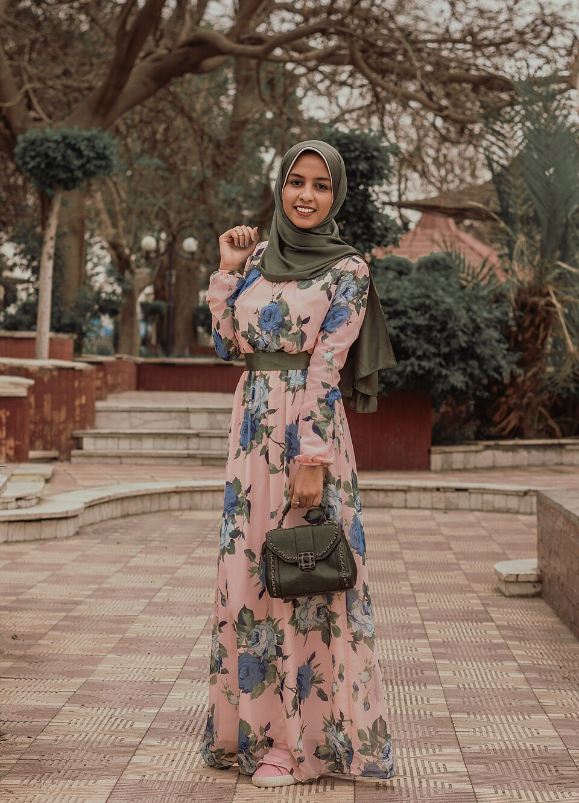
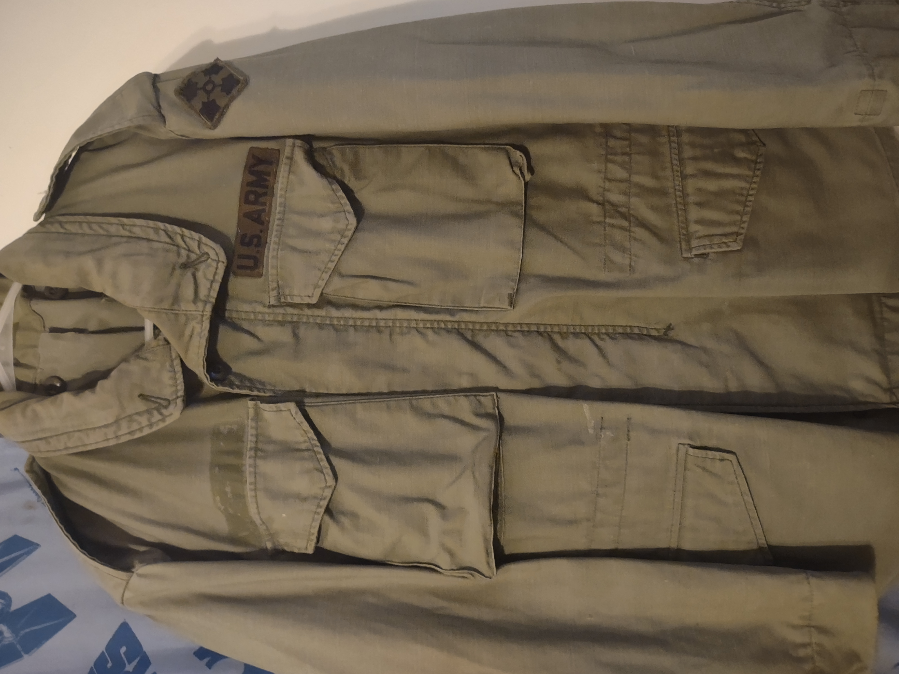

스트리트 참고 이미지
모델 예측: 스트리트 (44.9%)
TOP 3: 스트리트 44.9% / 리조트 23.1% / 모던 12.7%
원본·출처
Ines 2019 · CC BY-SA 4.0
프레피 참고 이미지
모델 예측: 스트리트 (86.4%)
TOP 3: 스트리트 86.4% / 모던 2.9% / 스포티 2.4%
원본·출처
Eric Douglas Statzer · CC BY-SA 4.0

히피 참고 이미지
모델 예측: 로맨틱 (44.6%)
TOP 3: 로맨틱 44.6% / 페미닌 40.3% / 리조트 4.9%
원본·출처
Bernivelez · CC BY-SA 4.0

펑크 참고 이미지
모델 예측: 스트리트 (55.8%)
TOP 3: 스트리트 55.8% / 스포티 8.0% / 섹시 7.7%
원본·출처
User:sand · Public domain

스포티 참고 이미지
모델 예측: 스트리트 (79.6%)
TOP 3: 스트리트 79.6% / 밀리터리 12.7% / 스포티 4.4%
원본·출처
· Public domain
클래식 참고 이미지
모델 예측: 페미닌 (45.8%)
TOP 3: 페미닌 45.8% / 모던 21.3% / 스트리트 18.1%
원본·출처
Fredrik Tersmeden (= User:FredrikT ) · CC BY 2.5

웨스턴 참고 이미지
모델 예측: 스트리트 (97.7%)
TOP 3: 스트리트 97.7% / 섹시 1.5% / 페미닌 0.2%
원본·출처
Robert Bejil from Bakersfield, Ca, USA · CC BY 2.0

레트로 참고 이미지
모델 예측: 페미닌 (53.4%)
TOP 3: 페미닌 53.4% / 로맨틱 44.5% / 리조트 0.8%
원본·출처
Bestvintage · Public domain

페미닌 참고 이미지
모델 예측: 로맨틱 (45.9%)
TOP 3: 로맨틱 45.9% / 페미닌 23.7% / 리조트 20.1%
원본·출처
Mustafa ezz · CC0

밀리터리 참고 이미지
모델 예측: 밀리터리 (67.7%)
TOP 3: 밀리터리 67.7% / 스트리트 26.7% / 젠더리스 2.0%
원본·출처
Godzilla0936 · CC BY-SA 4.0